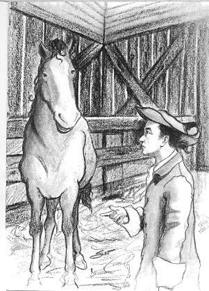
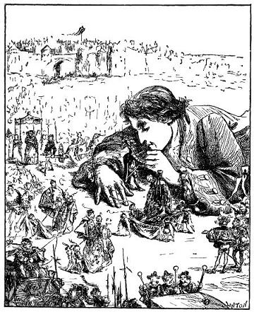
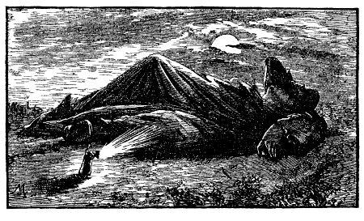

Chương 7
Tác giả suýt bị kết án tử hình, vội trốn sang nước Blefuscu. Nước này nghênh tiếp tác giả như thế nào.
Trước khi kể với các bạn việc tôi dời bỏ xứ sở này như thế nào, tôi xin cung cấp cho bạn đọc những tin tức về một âm mưu bí mật từ hai tháng nay, nhằm ám hại tôi.
Cho đến lúc ấy, tôi không biết gì về cuộc sống của cung đình, và do xuất thân thấp kém của mình nên tôi chẳng ưa gì lối sống ấy. Nói thật, tôi đọc và nghe nói không ít về những tính khí thất thường của vua chúa và của các vị tổng trưởng. Song chưa bao giờ tôi có thế tưởng tượng đến những hậu quả ghê gớm ở một xứ sở xa xôi như ở đây, một xứ sở được cai trị - theo tôi nghĩ - bằng những nguyên tắc khác xa những nguyên tắc ở châu Âu.
Trong khi tôi sửa soạn đi thăm vua nước Blefuscu thì một quan đại thần (tôi giúp ông ta một việc trọng đại khi ông ta đã mất hết mọi sự ưu đãi của nhà vua) đến nhà tôi lúc nửa đêm, ngồi trong một cái kiệu bịt kín, và xin phép được vào trong nhà không hề cho biết tên tuổi. Những người khiêng kiệu bị đuổi ra ngoài. Tôi cầm lấy kiệu, có cả quan đại thần ngồi trong, nhét vào túi áo, tôi bảo một người đày tớ trung thành nói rằng tôi bị mệt và muốn đi ngủ. Tôi khóa trái cửa hai lần, đặt cái kiệu lên bàn, lấy ghế ngồi trước mặt như thường lệ. Sau những lời chào hỏi thông thường, nhận thấy vẻ mặt vị quan đầy lo âu, tôi hỏi ông lý do. Ông bảo tôi phải lắng nghe nghe ông kể lại một câu chuyện có liên quan đến danh dự và cuộc đời tôi. Khi ông ra về tôi tức khắc ghi lại như sau:

"- Ngài cần biết rằng - ông nói - gần đây, nhiều cuộc họp của Hội đồng đã được bí mật triệu tập về việc của ngài. Cách đây hai hôm, đức vua đã quyết định "Không phải là ngài không biết Bolgolam - chức galbet hoặc đô đốc - là kẻ tử thù của ngài ngay từ khi ngài đặt chân lên đất nước này. Nguyên nhân sâu xa của sự thù ghét này thì tôi không biết. Song từ khi ngài chiến thắng quân Blefuscu: làm lu mờ cái địa vị đô đốc của ông ta, sự hằn thù ngày càng tăng. Vị quan ấy cùng với ông Flimnap, quan phụ trách kho bạc, mà mọi người đều biết là rất căm ghét ngài vì việc vợ ông ta, Limtoc, đại tướng, Lalcon, quan thị vệ, và Balmuff, tổng trưởng Bộ tư pháp, đã chuẩn bị buộc ngài vào tội phản bội và những trọng tội khác.
Lời mào đầu ấy làm tôi sốt cả ruột, tôi tự nhận thức rằng mình là người có nhiều công lao và là người vô tội, tôi định ngắt lời ông ta, thì ông ta bảo tôi đừng nói, để ông ta trình bày tiếp:
- Tôi ghi lòng những việc ngài giúp tôi, nên tôi quyết tâm tìm hiểu đầu đuôi vụ án và tìm cách lấy được bản sao. Vì ngài mà tôi sẵn sàng hy sinh cả tính mệnh.
NHỮNG KHOẢN KẾT ÁN
FLESTRIN, NGUỜI-NÚI
Khoản I
Xét theo quy chế từ triều hoàng thượng Calin Deffar Plune, thì bất cứ ai tiểu tiện bên cạnh cung điện nhà vua đều phải chịu những hình phạt như kẻ phản bội. Xét rằng tên Flestrin coi thường pháp luật ấy lấy lý do dập tắt đám cháy nơi cung điện hoàng hậu, đã phun nước tiểu một cách độc ác, bẩn thỉu và nhơ nhuốc vi phạm quy chế đã được quy định, v.v… vi phạm nhiệm vụ, v.v...
Khoản II
Xét rằng tên Flestrin, sau khi kéo được những chiến hạm nước Blefuscu vào hải cảng và nhận được lệnh hoàng thượng phải cướp tất cả tàu bè khác của nước Blefuscu, biến nước này thành một tỉnh thuộc địa do một phó vương cai trị, lệnh tiêu diệt những người theo "Chủ nghĩa Đầu trứng to" lưu vong và tất cả những kẻ theo tà thuyết này ở Blefuscu nữa, nhưng tên Flestrin đã chống lại hoàng thượng vô cùng anh minh và sáng suốt của chúng ta, hắn như một kẻ phản bội nổi loạn, bằng cách trình lên một bản thỉnh nguyện để từ chối nhiệm vụ, viện lý do rằng hắn ta không thể bắt ép lương tâm, để xóa bỏ tự do và gây nên cái chết của một dân tộc vô tội.
Khoản III
Xét rằng khi đoàn đại biểu nước Blefuscu được phái sang để cầu hòa, chính tên Flestrin đã giúp đỡ, động viên và nói chuyện với đoàn đại biểu, mặc dù hắn biết chúng chỉ là tôi tớ của một ông vua mới đây còn là kẻ thù công khai của hoàng thượng và gây cuộc chiến tranh chống lại Ngài.
Khoản IV
Xét rằng tên Flestrin, đi ngược lại nhiệm vụ của một thần dân trung thành: hắn hiện đang sửa soạn một cuộc du lịch sang triều đình Blefuscu, và mới chỉ được hoàng thượng cho phép bằng miệng. Dựa vào lời nói ấy, hắn có ý định xảo quyệt và phản bội là sang nước láng giềng để giúp đỡ động viên, ủng hộ vua Blefuscu...
Còn mấy điều khoản nữa, nhưng tôi chỉ đọc cho ngài nghe một số đoạn trích quan trọng như trên.
Phải thừa nhận rằng trong các cuộc thảo luận về sự buộc tội này, hoàng thượng đã nhiều lần tỏ ra ôn hòa, nói đến công lao của ngài đã giúp hoàng thượng và có làm giảm nhẹ tội của ngài. Nhưng viên quan coi kho bạc và viên đô đốc đòi kỳ được sẽ tử hình ngài bằng một cách tàn ác và vô liêm sỉ nhất, đó là cách đốt nhà của ngài lúc đêm. Viên đại tướng đã chuẩn bị hai vạn quân được vũ trang bằng tên tẩm thuốc độc để bắn vào mặt và tay ngài. Một số đầy tớ của ngài sẽ nhận được lệnh bí mật vẩy một thứ thuốc độc lỏng lên áo sơ mi và khăn trải giường của ngài, làm cho ngài tự xé rách da thịt mình, và ngài phải chết trong sự đau đớn cực độ. Viên đại tướng đồng ý với đề nghị ấy. Cho nên, trong thời gian vừa qua, số đông là chống lại ngài. Nhưng hoàng thượng quyết tâm không để ngài phải chịu tội chết, và đã được ngài thị vệ tán đồng.

Trong khi sự việc diễn biến như vậy thì Reldresal, tổng trưởng Bộ những việc riêng tư, xưa nay vẫn là bạn thân của ngài, được hoàng thượng cho phép nói ý kiến của mình. Ông ta cho rằng ngài là người biết người biết của. Trước hết, ông ta thừa nhận là ngài phạm những tội nặng, song phải dành một phần cho lòng độ lượng và đạo đức cao quý nhất của một ông vua, đạo đức khiến đức vua đã lừng danh bốn biển. Ông ta bảo tình bạn gắn bó ngài với ông ta, mọi người đều biết, và Hội đồng có thể cho lời phán đoán của ông ta là thiên vị, nhưng tuân lệnh hoàng thượng, ông ta cứ nói thật. Nếu hoàng thượng xét công lao của ngài, bao dung độ lượng mà cứu sống ngài, chỉ khoét mắt ngài thôi, thì ông ta cho rằng, bằng cách ấy công lý được bảo đảm và tất cả mọi người đều hoan nghênh lòng nhân từ của hoàng thượng, cũng như những phương thức cao thượng và bao dung của những người được vinh dự làm cố vấn cho hoàng thượng. Ngài bị mù mắt, việc đó không phương hại đến sức khỏe, mà còn có thể có ích cho hoàng thượng, mù mắt chỉ làm cho người ta thêm can đảm, vì người ta không trông thấy những mối nguy hiểm. Khi ấy, đầu óc con người yên tĩnh hơn, nỗi sợ hãi chẳng đã là nỗi khó khăn nhất mà ngài đã phải vượt qua để chiếm được chiến hạm của địch đấy ư, vậy ngài cứ nhìn sự đời qua cặp mắt của người khác (cặp mắt của các vị tổng trưởng) thế là đủ lắm rồi, vì các bậc vua chúa hùng mạnh nhất cũng nhìn theo kiểu như vậy.
Đề nghị này bị toàn thể Hội đồng phản đối. Ông Bolgolam, thủy sư đô đốc, không giấu nổi sự giận dữ. Ông ta hằm hằm đứng dậy, bảo ông ta lấy làm ngạc nhiên khi ông tổng trưởng dám bày tỏ ý kiến bảo vệ cho một kẻ phản bội. Những việc ngài làm, theo những châm ngôn chân chính của quốc gia, chi làm tăng thêm tội của ngài. Bởi vì, ngài đã có gan dập tắt đám cháy bằng một bãi nước tiểu, phun vào dinh thự của hoàng hậu (ông ta tỏ vẻ rất sợ hãi khi nói việc này), thì một lần khác, ngài cũng có thể dùng cách ấy làm lụt cả cung điện. Thêm nữa, sức ngài có thể kéo được hạm đội trở về thì sẽ có thể một lúc nào đó trong cơn tức giận ngài sẽ đem hạm đội ấy trở về chỗ cũ. Ông ta bảo ông ta có nhiều lý do để tin rằng trong thâm tâm ngài theo "Chủ nghĩa Đầu trứng to". Sự phản bội bao giờ cũng nảy sinh từ ý nghĩ trước khi biểu hiện thành hành động, nên ông ta coi ngài như một kẻ phản bội. Vì vậy, đòi hỏi ngài phải chịu án tử hình.
Viên quan ngân khố tán thành ý kiến ấy. Ông ta trình bày nền tài chính quốc gia, vì phải nuôi dưỡng ngài, đã kiệt quệ đến mức nào. Tình hình sẽ nguy khốn nếu sử dụng cách khoét mắt ngài, đó không phải là một phương pháp tốt để cứu vãn tình hình tài chính kiệt quệ, mà ngược lại làm tăng thêm phần nguy hiểm, bởi vì rõ ràng là, muốn cho gà vịt ăn nhiều và chóng béo, người ta chọc mù mắt chúng. Hoàng thượng và Hội đồng là những người dùng ra xét xử, đã hiểu rất rõ tội trạng của ngài, điều đó là một lập luận đủ để kết án tử hình mà không cần viện đến những chứng cớ hình thức mà pháp luật cứng nhắc đòi hỏi phải có.
Nhưng đức vua quyết tâm tránh cho ngài án tử hình, nên Ngài có nhã ý nói rằng Hội đồng thấy việc khoét mắt là một hình tội còn nhẹ, sau này có thể tìm thấy những hình tội nặng hơn. Và ông bí thư bạn ngài xin được Hội đồng nghe ông ta nói. Để trả lời những lời buộc tội của viên quan kho bạc về việc nuôi dưỡng ngài tốn kém, ông ta nói rằng quan quản lý là người chịu trách nhiệm về nền tài chính có thể dễ dàng giảm bớt chi phí bằng cách hạn chế thực phẩm cung cấp cho ngài. Như vậy, ngài sẽ thiếu ăn và gầy yếu dần, rồi đến lúc ngài không muốn ăn nữa, ngài sẽ chết dần chết mòn trong vài ba tháng. Như thế, xác ngài thối rữa ra sẽ bớt nguy hiểm, bởi vì nó sẽ nhỏ đi một nửa. Và ngay sau khi ngài chết, năm hay sáu nghìn người có thể róc thịt ngài trong vài ba hôm là xong, rồi mang đi chôn từng miếng cách xa nhau để tránh bệnh dịch hạch, còn bộ xương của ngài thì để cho hậu thế ngắm xem. Thế là, vì tôn trọng tình bạn cao cả của ông bí thư, người ta đi đến một giải pháp dung hòa. Việc làm cho ngài chết dần được tuyệt đối giữ bí mật và quyết định khoét mắt ngài được ghi thành văn bản. Không ai phản đối, trừ ông đô đốc Bolgolam, đày tớ của hoàng hậu, người luôn luôn đòi hỏi phải xử tử ngài vì ngài đã dùng cách thấp hèn và không hợp pháp dễ dập tắt đám cháy.
Nội ba ngày nữa, ông bí thư bạn ngài sẽ đến đây đọc bản án để ngài biết quyết định của hoàng thượng và Hội đồng, và ngài sẽ bị khoét mắt. Hoàng thượng tin rằng ngài sẽ không để cho người ta thi hành bản án một cách ngoan ngoãn, với một tấm lòng biết ơn. Hai mươi nhà phẫu thuật của hoàng thượng sẽ có mặt và chịu trách nhiệm thi hành bản án, ngài sẽ nằm xuống đất và người ta sẽ bắn tên vào hai con ngươi ngài.
Thôi, để ngài suy nghĩ về cách đối phó, còn tôi, tôi phải bí mật về tức khắc, bí mật cũng như lúc tôi đến đây, để tránh mọi sự nghi ngờ".
Thế là tôi ngồi lại một mình, lòng đầy lo âu và suy nghĩ. Gần đây, đức vua và các ngài tổng trưởng mới đặt ra một tục lệ đặc biệt (rất khác với tập quán ngày xưa - người ta cho tôi biết như vậy). Khi triều đình ban một sắc lệnh tàn nhẫn để thỏa mãn sự tức giận của nhà vua hay lòng độc ác của một kẻ cận thần, vua đọc một bài diễn văn trước Hội đồng, nói đến đức khoan hồng và lòng thương dân của mình, coi đó là một đức tính mà mọi người đều biết và ca ngợi. Bài diễn văn tức khắc được thông báo cho toàn quốc, và nhân dân không sợ gì bằng sợ những lời ca ngợi đức bao dung của nhà vua. Bởi vì, người ta nhận xét rằng, những lời mở đầu càng văn hoa thì sự trừng phạt càng nặng và nạn nhân càng là người không có tội. Nhưng, đối với việc liên quan đến tôi hiện nay, tôi thú thật rằng, vốn không phải là một triều thần và cũng không được hưởng nền giáo dục để làm quan, nên tôi phán đoán không đúng về những sự việc ấy và tôi không thế cho rằng lời mở đầu này là dịu dàng, cao cả, mà ngược lại, tôi thấy nó quá khắt khe (có lẽ tôi lầm chăng). Tôi không nghĩ cách tự bào chữa trước Hội đồng, bởi vì, tôi không thể chối cãi được những sự việc đã ghi trong các điều của bản án, nhưng tôi vẫn hy vọng người ta sẽ công nhận công lao đóng góp của tôi để xét ân giảm. Nhưng trong cuộc đời tôi, tôi đã chứng kiến nhiều vụ án kiểu này, bao giờ cũng kết thúc theo chỉ thị đã được đưa ra của các quan tòa, và theo ý muốn của các vị quyền cao chức trọng, cho nên tôi không dám tin vào quyết định nguy hiểm ấy của mình. Trong tình thế ác liệt này và trước những kẻ thù có thế lực đã có lúc tôi có ý định kháng cự lại, bởi vì tôi còn tự do thì tất cả những lực lượng quốc gia tập hợp lại dễ gì chống lại nổi tôi, và với mấy hòn đá, tôi có thể dễ dàng phá tan tành cả thành phố. Song, tôi gạt bỏ ngay ý định ấy, bởi vì tôi nhớ lại lời tuyên thệ trước nhà vua và những ân huệ ngài đã ban cho tôi, cũng như danh dự Nardac ngài đã ban thưởng. Tôi chưa học được nhiều lấm lòng biết ơn của các bậc triều thần để thấy rằng những đối xử khắc nghiệt hiện nay của đức vua có thể giải phóng tôi khỏi nhưng ân huệ trước kia.
Sau cùng, tôi đi đến một quyết định, chẳng tránh khỏi có đôi chỗ đáng chê trách. Cũng vì táo bạo và thiếu kinh nghiệm, nên khi tôi muốn giữ không để mất đôi mắt, mất cuộc sống tự do và sinh mệnh của mình, tôi đã bất chấp tất cả các sắc lệnh của triều đình. Giả thử lúc đó tôi biết được bản chất các ông vua và các vị tổng trưởng như tôi đã quan sát được ở nhiều triều đình khác, cũng như cách đối xử của họ với những phạm nhân tội nhẹ hơn tôi, thi có lẽ tôi đã dễ dàng chấp nhận hình phạt đáng yêu ấy rồi. Nhưng, thời ấy, tuổi trẻ vốn nóng nảy, và sẵn dịp được phép của đức vua cho sang thăm vua nước Blefuscu, tôi bèn gửi ngay một bức thư cho ông bạn bí thư, báo tin sáng hôm ấy tôi đi Blefuscu, trước khi đợi cho ba ngày trôi qua. Không đợi trả lời, tôi di về phía hải cảng. Tôi chọn một chiếc chiến hạm lớn, buộc mũi tàu vào một dây cáp, kéo dây neo lên tôi cởi áo đặt lên trên tàu, rồi với một cái chăn kẹp ở nách, tôi kéo cái tàu theo sau: khi lội bì bõm, khi bơi trên biển. Tôi đến hải cảng nước Blefuscu, dân chúng đã đứng ở cảng đón tôi từ lâu. Họ cử hai người dẫn đường đưa tôi đến thủ đô cũng gọi là Blefuscu. Tôi cầm hai người trên tay cho đến khi cách cổng thành phố một trăm fathom. Tôi bảo họ đi báo tin cho một viên quan rằng tôi đã đến và đang đứng đợi lệnh của hoàng thượng. Một giờ sau, tôi nhận được tin trả lời: Hoàng thượng cùng với hoàng gia sẽ ra tận nơi chào mừng tôi. Tôi tiến lên năm mươi fathom nữa. Vua và đoàn tùy tùng xuống ngựa, hoàng hậu và các nữ tì xuống xe, chẳng có ai lộ vẻ sợ sệt hay lo lắng cả. Tôi nằm dài xuống đất để hôn tay đức vua và hoàng hậu. Tôi tâu với ngài rằng, giữ lời hứa của tôi và được phép của đức vua Lilliput, tôi đến đây để được vinh dự gặp một ông vua hùng cường và để phụng sự Người trong những trường hợp không hại đến quyền lợi của vua nước Lilliput.

Tôi sẽ không làm phiền bạn đọc với những chi tiết về cuộc đón tiếp tôi nơi cung đình Blefuscu, xứng đáng với đức độ của một nhà vua hùng mạnh, hoặc những khó khăn tôi đã trải qua vì không có nhà và giường, phải quấn tấm chăn ngủ dưới đất.
